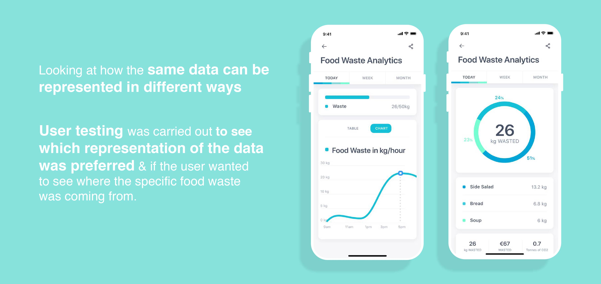
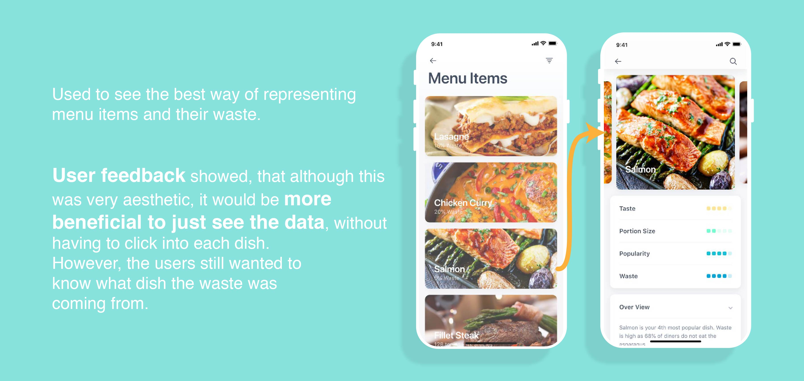
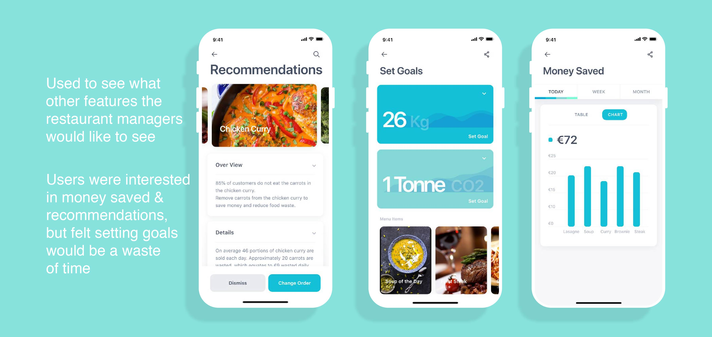
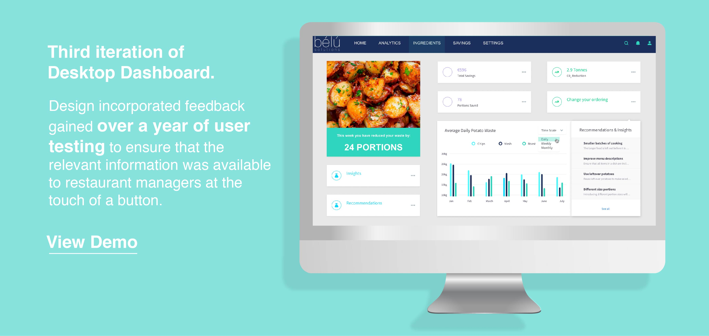

Developed using Adobe XD

Wireframes
Volyymi
Not knowing when a catheter bag is full can lead to serious medical conditions for some users. A smart catheter bag has been developed to notify the user when they need to empty their bag. Below is an early stage wireframe designed for this catheter bag.
Use
Wireframe developed for user testing to gather insights and develop the design, features and layout of the app.
Need
This app interface was to display how full the bag was, how hydrated the user was and how far away the nearest accessible bathroom was to them.
Solution
Ease of use was the main aim in this design. All buttons were kept at the bottom of the screen, making sure that the user did not have to move their hand to access key features on the app.
Bélú
Food waste is a serious global problem, with one third of all food produced being thrown away. If food waste was a country it would be the third largest green house gas emitter in the world, right after China and the USA. Bélú aimed at reducing this food waste in restaurants by generating food waste data that could then be used by managers to change their habits, reduce food waste, cut costs and subsequently their impact on the environment.
Use
Wireframe developed for user testing to gather insights and develop the design, features and layout of the app.
Need
The restaurant manager should be able to easily see where food is being wasted, what needs to change and how they can improve.
Solution
App interface that would display key insights into food waste.
For the initial wireframes, templates were used and altered to meet the needs of this project. This was done to save time. There is no point in developing something that already exists, especially as a first design iteration.
   What I learned
- Using existing templates for initial design iterations saves a lot of time. Getting useful feedback and working through design iterations quickly is more beneficial in the long run.
- Turing insights gathered from user testing into design changes.
- Placement of buttons on apps - Buttons at the top of phone screens are inaccessible and should be avoided.
- Adobe XD skills were developed.
- Rather than showing users multiple options and asking which they would prefer, I found it best to show one or two options, explain the background and get their ideas on what other options/features they think could be incorporated into the design.